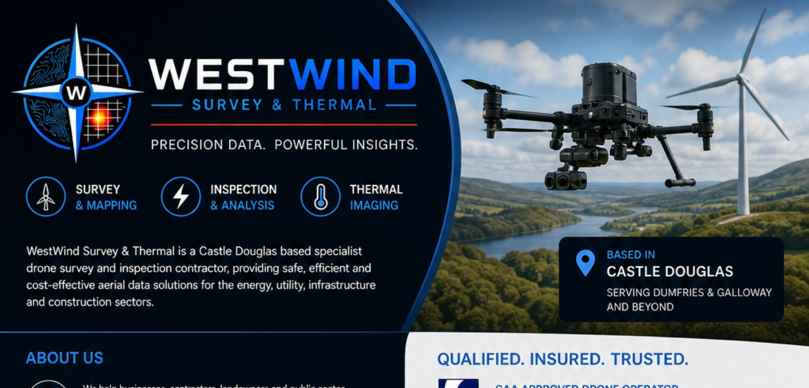
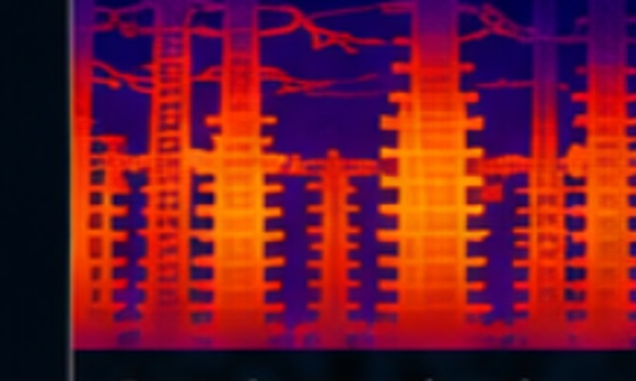
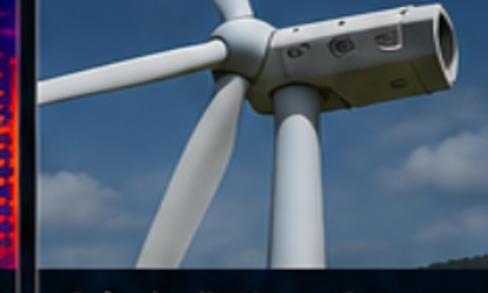
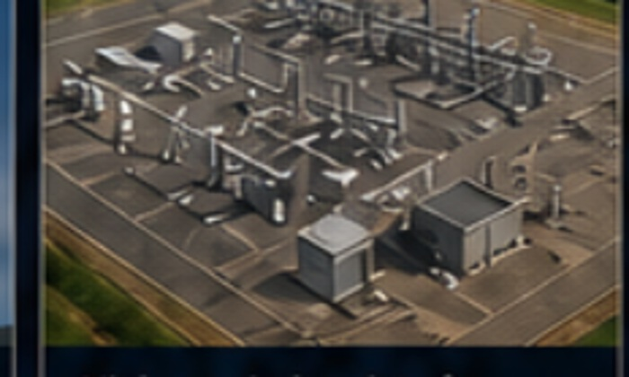
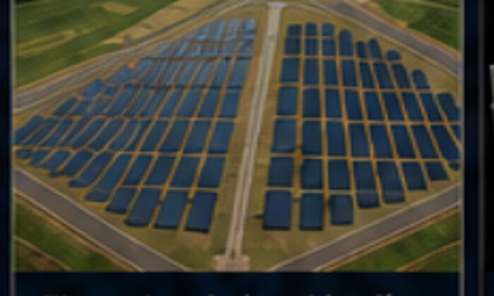
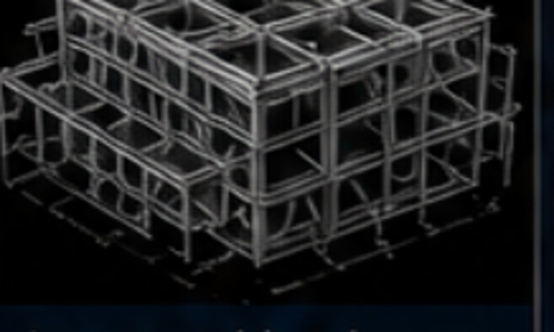
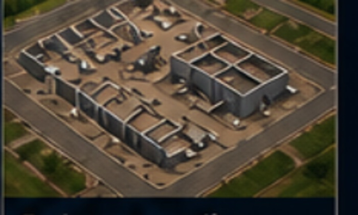

Drone Thermal Imaging
Identify hotspots, electrical faults and thermal anomalies.

Precision Data. Powerful Insights.
WestWind Survey & Thermal provides safe, efficient and cost-effective aerial data solutions for energy, utility, infrastructure, construction and property clients across the UK.
What we do
Identify hotspots, electrical faults and thermal anomalies.
Blade, nacelle and tower inspections using high-resolution imagery.
Survey overhead lines, substations, telecoms and critical assets.
Thermal and visual inspection to identify underperforming assets.
Orthomosaics, modelling, progress mapping and digital outputs.
Condition surveys, defect finding and rapid response inspection.
Qualified. Insured. Trusted.
WestWind combines enterprise drone equipment with a safety-first workflow, clear reporting and practical deliverables for real project decisions.
Applications

Detect issues early, reduce downtime and improve asset reliability.

Safe, detailed inspections without costly access methods.

High-resolution data for asset management and compliance.

Find panel faults and performance issues using aerial data.

Accurate models and measurements for planning and reporting.

Track progress, verify work and reduce project risk.
Contact
☎ 07720 323509
✉ info@westwindsurvey.co.uk
◎ westwindsurvey.co.uk
⌖ Castle Douglas, Dumfries & Galloway — operating UK-wide